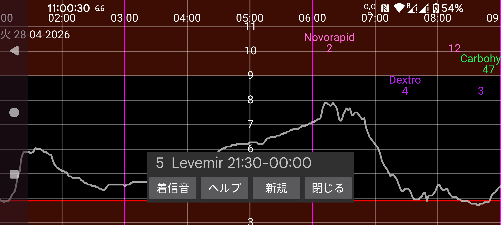

ar be de es fr hi it ja nl pl pt ru tr uk uz zh en
リマインダーは、特定の時間範囲内に特定の記録を入力していない場合にリマインドします。
新規を押すと新しいリマインダーを追加できます。
指定したラベルで指定した量を入力すべき時間範囲の開始時刻と終了時刻を指定します。
終了時刻に達すると、プログラムは指定したラベルでこの量以上を開始時刻以降に入力したかをチェックします。登録していない場合、通知が表示され着信音が鳴ります。
例えば次のように指定すると:
レベミル 6.0
21:30 ‐ 23:55
同日 21:30 以降に少なくとも 6 単位のレベミルを指定していない場合、23:55 以降にリマインドされます。
既に指定したリマインダーは一覧に表示されます。タッチで編集できます。
問題なく動作すれば、ユーザーが Juggluco を起動しなくても Android の再起動後にリマインダーは動作します。
一部の Huawei 端末では、起動時にプログラムを起動することを許可する必要があります。これは Android 設定 → バッテリー → アプリ起動で行います。Juggluco に対して 手動で管理 を選択し、自動起動 と バックグラウンドで実行 をオンにします。これは、ユーザーが Juggluco を起動せずに再起動後に信号喪失アラームを動作させるためにも必要です。